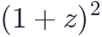
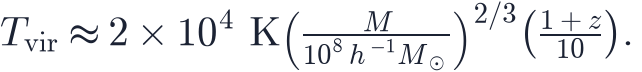

In this lesson you will learn
|
A universe with the lights off
When the CMB was released (L4.4) the universe glowed at 3000 K — a dull orange everywhere. Then the glow stretched into the infrared, and there was nothing to replace it. No star had formed yet. For more than a hundred million years the universe held only neutral hydrogen and helium gas, dark matter and the fading background light. These are the dark ages.
Nothing happened in the dark ages in the sense of an event you could photograph, but two things were going on quietly: the gas was cooling, and the ripples in the matter were growing.
How the gas cooled
After recombination a few free electrons were left over — about three in ten thousand (see the freeze-out in S25). They kept scattering CMB photons, and that was enough to tie the temperature of the gas to the temperature of the radiation for a long time. Both cooled as .
Around the leftover electrons became too dilute to keep up. From then on the gas cooled on its own, the way any gas cools when it expands: as

, faster than the radiation.Two thermometers A monatomic gas expanding adiabatically has , while
radiation has while the CMB is still at . Gas colder than the background light absorbs it: this is the signal that 21-cm experiments look for (L6.4). |
Try it: 21-cm Global Signal Explorer Open "Three temperatures" and find where the gas leaves the CMB behind. The dark-ages absorption trough follows from that alone. |
Try it: Recombination Explorer Switch on the logarithmic axis and find the electrons that never recombine. Those few are what kept the gas warm until z ≈ 150. |
The first haloes: small, and rare
The matter ripples were growing all along, by gravity. Dark matter, which had not been held back by the photons, was ahead of the gas. A region collapses into a gravitationally bound halo once its density contrast would have reached about 1.69 in linear theory — and the smaller the region, the larger its typical contrast. Small haloes therefore form first and merge into larger ones: structure grows from the bottom up.
At any moment most of the matter sits in haloes near a typical mass, but the first objects of any kind come from the rare, unusually dense peaks — three or four standard deviations above the average. The halo mass function counts them.
Try it: Halo Mass Function Explorer Set the redshift to 20 and read the number of haloes above 10⁸ M☉/h. Then open "Across cosmic time" and watch haloes of galaxy and cluster size appear much later. |
Why gas has to cool to make a star
A halo is not yet a galaxy. The gas that falls into it is heated by the fall to the halo's virial temperature, and hot gas holds itself up by its pressure. To sink to the centre and fragment into stars it has to radiate that heat away.
The virial temperature Gas falling into a halo of mass  Hydrogen atoms radiate efficiently only above about K, when collisions excite them. Below that the only coolant in metal-free gas is a trace of molecular hydrogen, H₂, which works down to a few hundred kelvin, slowly. |
That splits the first haloes into two kinds:
- Minihaloes of
 –
– at –, cooled by H₂. They made
the very first stars, one or a few at a time.
at –, cooled by H₂. They made
the very first stars, one or a few at a time. - Atomic-cooling haloes above about
 , from onwards,
cooled by hydrogen itself. They are the first real galaxies.
, from onwards,
cooled by hydrogen itself. They are the first real galaxies.
Population III: stars without metals
The first stars formed from gas made in the Big Bang alone: hydrogen, helium and a trace of lithium (L4.3). Without carbon, oxygen or dust to radiate heat, the gas could not fragment into small clumps, and the stars that formed are thought to have been massive — tens to hundreds of solar masses. They are called Population III.
Massive stars live only a few million years. Population III stars exploded as supernovae and seeded the gas around them with the first heavy elements; from then on, every star contained some metals. That is why none has been found: they were all gone within a few hundred million years of the Big Bang.
Finding them indirectly Astronomers look for their fingerprints instead: the oldest, most metal-poor stars in our own Galaxy, whose chemistry records a single earlier supernova, and the unusual spectra of some very high-redshift galaxies, where helium lines hint at extremely hot, metal-free stars. |
Cosmic dawn seen by JWST
The light of the first stars ended the dark ages: this is cosmic dawn. The James Webb Space Telescope was built to see it. Its infrared camera catches the ultraviolet light of galaxies redshifted by a factor of ten or more, and since 2022 it has pushed the record redshift above 14 — galaxies seen less than 300 million years after the Big Bang.
What surprised people was the number of bright galaxies at : several times more than most models predicted. For a while it was suggested that ΛCDM itself was in trouble, that there simply was not enough mass in haloes that early. On closer inspection the haloes are there; what looks different is the galaxies inside them.
Not too many haloes — busier galaxies The halo mass function at contains enough mass for these galaxies if they turned a larger fraction of their gas into stars than galaxies do today, or formed their stars in short, bright bursts, or had little dust and a mass function tilted towards massive stars. The question has moved from "is ΛCDM wrong?" to "how did the first galaxies work?" |
The same era contains another puzzle: black holes of millions of solar masses already in place at (L6.9). The first galaxies then went on to reionise the universe, which is the story of L6.4.
Try it: Interactive Cosmic Timeline Jump to "Dark ages" and then "First stars" on the Interactive Cosmic Timeline and compare the temperature and the age of the universe. |
Remember this
|